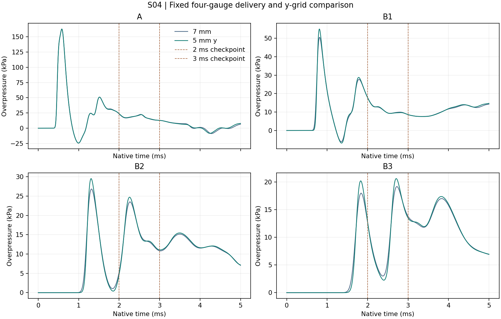
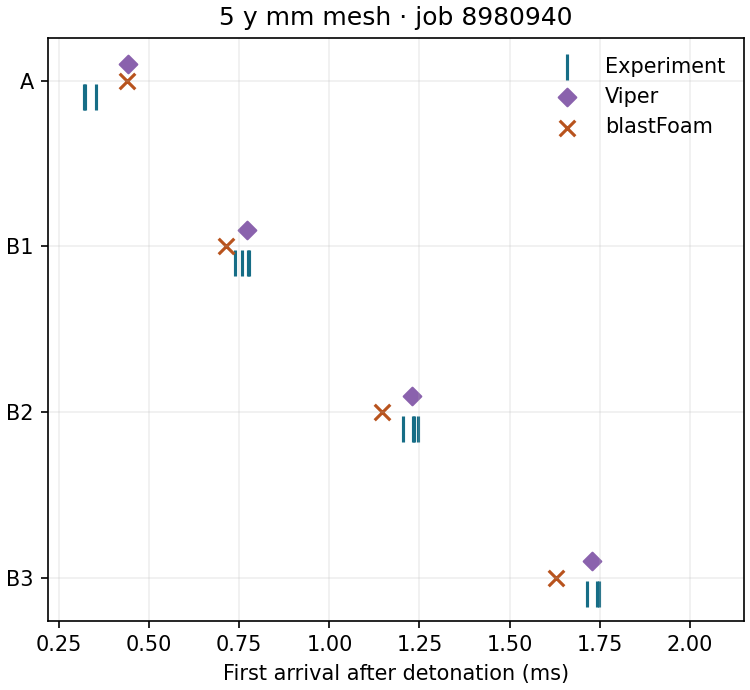

C 集群 8980940 按 2、3 ms 检查点接续，四点共同交付 0–5 ms。固定遮蔽侧实测 MAPE 23.66%，8/11 项 APE ≤30%。14 项全组峰值可比 11/14，MAPE —。实测到达时间 MAPE 12.08%。

| 测点 | 参考组 | 试次 | 参考 kPa | 7 mm kPa | 7 mm APE % | 5 mm y kPa | 5 mm y APE % |
|---|---|---|---|---|---|---|---|
| A | 实测 | 1 | 303.05 | — | — | — | — |
| B1 | 实测 | 1 | 63.37 | 50.47 | 20.37 | 54.97 | 13.26 |
| B2 | 实测 | 1 | 36.28 | 26.83 | 26.06 | 29.52 | 18.63 |
| B3 | 实测 | 1 | 30.21 | 17.98 | 40.49 | 20.20 | 33.13 |
| B1 | 实测 | 2 | 74.22 | 50.47 | 32.00 | 54.97 | 25.94 |
| B2 | 实测 | 2 | 39.32 | 26.83 | 31.78 | 29.52 | 24.92 |
| B3 | 实测 | 2 | 32.62 | 17.98 | 44.87 | 20.20 | 38.06 |
| A | 实测 | 3 | 239.75 | — | — | — | — |
| B1 | 实测 | 3 | 70.96 | 50.47 | 28.88 | 54.97 | 22.53 |
| B2 | 实测 | 3 | 38.00 | 26.83 | 29.41 | 29.52 | 22.31 |
| B3 | 实测 | 3 | 29.35 | 17.98 | 38.72 | 20.20 | 31.16 |
| A | 实测 | 4 | 219.16 | — | — | — | — |
| B1 | 实测 | 4 | 66.42 | 50.47 | 24.02 | 54.97 | 17.24 |
| B2 | 实测 | 4 | 33.95 | 26.83 | 21.00 | 29.52 | 13.06 |
| A | 论文 Viper | same scale Viper | 151.00 | — | — | — | — |
| B1 | 论文 Viper | same scale Viper | 69.00 | 50.47 | 26.86 | 54.97 | 20.33 |
| B2 | 论文 Viper | same scale Viper | 38.00 | 26.83 | 29.41 | 29.52 | 22.31 |
| B3 | 论文 Viper | same scale Viper | 28.00 | 17.98 | 35.78 | 20.20 | 27.84 |
